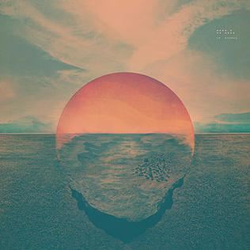
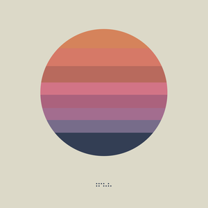
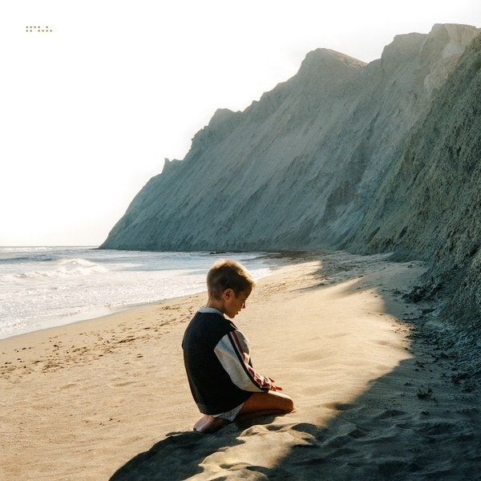

| Art | Title | Album Details |
|---|---|---|
|
Past Is Prologue |
Released: September 24, 2004 (Sunrise Projector) October 25, 2006 (Past Is Prologue) Label: Gammaphone, Merck Formats: CD, LP, digital download | |
|  |
Dive |
Released: November 8, 2011 Label: Ghostly International Formats: CD, LP, digital download |
|  |
Awake |
Released: March 18, 2014 Label: Ghostly International Formats: CD, LP, digital download |
|
Epoch |
Released: September 30, 2016 Label: Ghostly International Formats: CD, LP, digital download | |
|
Epoch |
Released: July 12, 2019 Label: Mom + Pop, Ninja Tune Formats: CD, LP, digital download | |
|  |
Simulcast |
Released: February 28, 2020 Label: Mom + Pop Music, Ninja Tune Formats: CD, LP, digital download |